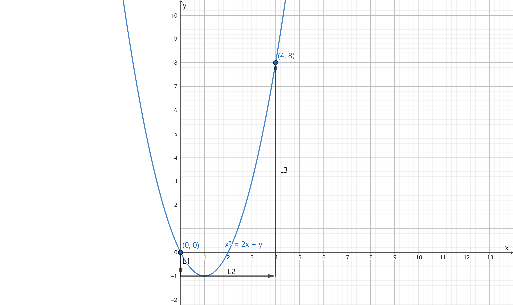
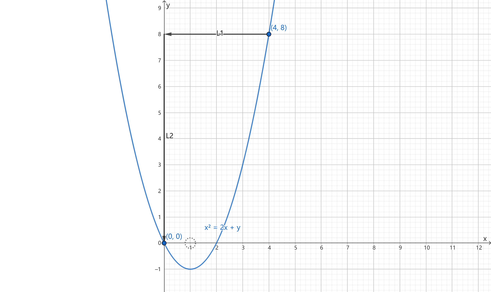

【折线法】

P=−(x−1)2+y2y，Q=(x−1)2+y2x−1
∂y∂P=∂x∂Q=−(x−1)2+y21(x,y)=(1,0)
选择 (0,0)→(0,−1)→(4,−1)→(4,8)
l1:(0,0)→(0,−1)x=0y:0→−1，Il1=∫0−1y2+1−1dy=4π
l2:y=−1x:0→4，Il2=∫041+(x−1)21dx=arctan3+4π
l3:x=4y:−1→8，Il3=∫−1332+y23dy=31∫−181+(3y)21dy=31×3∫−181+(3y)21d(3y)=arctan38+arctan31
I=Il1+Il2+Il3=2π+arctan3+arctan38+arctan31
L′=l1+l2+L，l3:(x−1)2+y2=ϵ2（逆时针，ϵ 足够小）

∮L′Pdx+Qdy=∮l3Pdx+Qdy=ϵ21∮l3−ydx+(x−1)dy=ϵ21∬D[1−(−1)]dxdy=2π
∮l1Pdx+Qdy=∫40(x−1)2+82−8dx=arctan8x−1∣04=arctan83+arctan81
∮l2Pdx+Qdy=∫801+y21dy=arctany∣08=arctan8
I=2π−arctan83−arctan81−arctan8